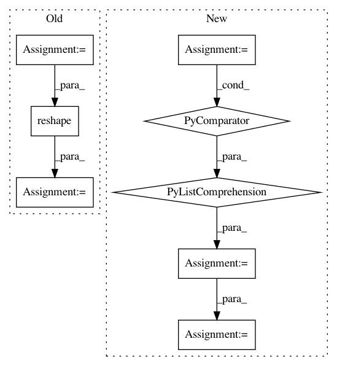

b939c910d036d8197ac7c63e5f188bc4c4fc4803,foolbox/batching.py,,run_parallel,#Any#Any#Any#Any#Any#Any#Any#Any#,94
Before Change
zip(*batched_predictions_args)))
batched_predictions_args = list(batched_predictions_args)
// get original shape (//attacks, batch size)
batch_shape = batched_predictions_args[0].shape
// merge individual batches into one super-batch
batched_predictions_args[0] = batched_predictions_args[0].reshape(
-1, *batch_shape[2:])
batched_predictions = model.forward(*batched_predictions_args)
// split super-batch back into individual batches
batched_predictions = batched_predictions.reshape(
*batch_shape[:2], -1)
else:
batched_predictions = []
if len(attacks_requesting_gradients) > 0:
After Change
// merge individual batches into one larger super-batch
batch_lengths = [len(x) for x in inputs]
batch_splits = np.cumsum(batch_lengths)
inputs = np.concatenate([x for x in inputs])
// split super-batch back into individual batches
batched_predictions = model.forward(inputs)
batched_predictions = np.split(batched_predictions, batch_splits,
axis=0)
else:
batched_predictions = []
In pattern: SUPERPATTERN
Frequency: 3
Non-data size: 8
Instances
Project Name: bethgelab/foolbox
Commit Name: b939c910d036d8197ac7c63e5f188bc4c4fc4803
Time: 2019-07-20
Author: rzrolandzimmermann@gmail.com
File Name: foolbox/batching.py
Class Name:
Method Name: run_parallel
Project Name: tensorly/tensorly
Commit Name: 3dba9054b3c7bf4b9edabb430eb457a07e05b6ca
Time: 2018-07-05
Author: jean.kossaifi@gmail.com
File Name: tensorly/mps_tensor.py
Class Name:
Method Name: mps_to_tensor
Project Name: HyperGAN/HyperGAN
Commit Name: e4ee8e989f0ee8138798c290233c1c3ec7d3fb61
Time: 2016-10-29
Author: martyn@255bits.com
File Name: lib/gan.py
Class Name:
Method Name: generator